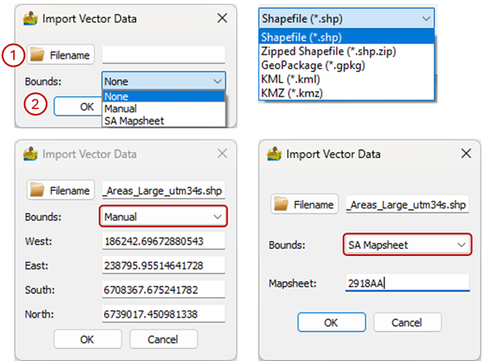
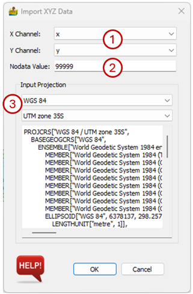
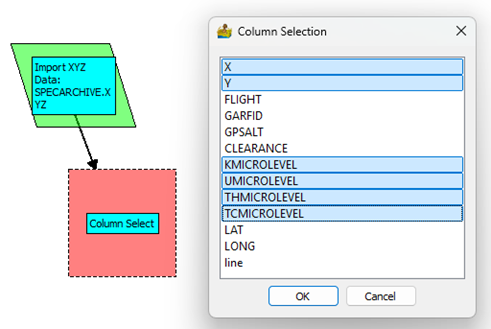
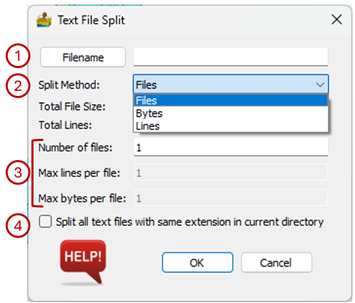
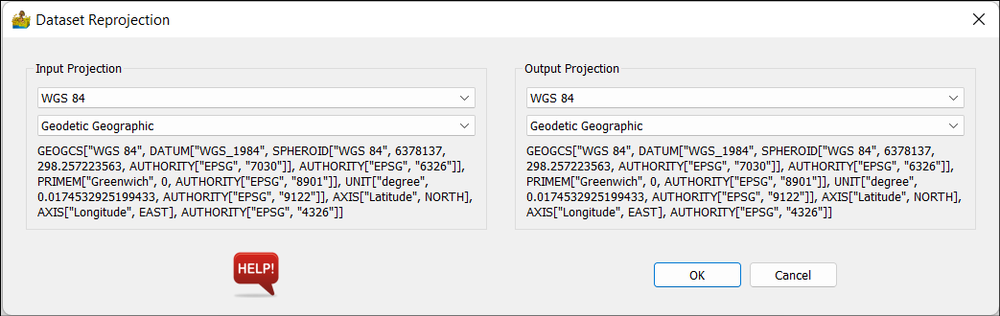
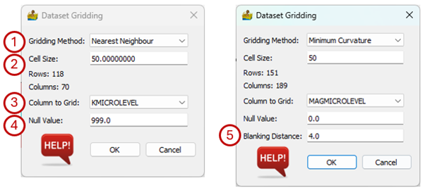
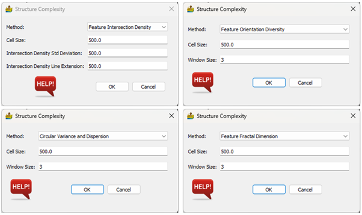

Vector Analysis: Description of Modules¶
Import Vector Data¶
This module imports ESRI shapefiles (.SHP), zipped shapefiles (.SHP.ZIP), GeoPackages (.GPKG), Keyhole Markup Language (.KML) and zipped KMLs (.KMZ). These formats are also referred to as vector data within PyGMI.
When selecting the Import Vector Data menu entry, the user is prompted for the following information:
Folder locality, filename and format of the input vector file.
Bounds - Vector files can be clipped using the bounds option. This can either be in terms of desired extents entered manually or a mapsheet number.

Import XYZ Data¶
This module imports XYZ/point data from a file, for example a CSV or Excel file. The user must choose the x and y columns.
List of formats:
Excel (.XLSX)
Comma Delimited (.CSV)
Geosoft XYZ (.XYZ)
ASCII XYZ (.XYZ)
Space Delimited (.TXT)
Tab Delimited (.TXT)
Intrepid Database (..DIR)
Once the file has been selected the user must specify the following parameters:
Select the X and Y columns. These columns must be in the coordinates specified in the Input Projection section.
X Channel - This is the column which contains the x-coordinates.
Y Channel - This is the column which contains the y-coordinates.
Nodata Value - This is the null or nodata value in the data file. If the nodata value in the data file is different from the value specified here, nodata values will be considered real data.
Input Projection - The datum and projection are specified here. This is especially important if the user intends to export the data to a vector (GIS) format.

Column Select¶
Vector data, in particular survey data, often have multiple columns. The Column Select module allows the user to select only the columns they want to use in further operations. Columns names are displayed and can be selected/deselected by clicking on them.

Text File Split¶
Text files can be split into a series of smaller files, either by number of files, bytes per file of lines per file.
The options are:
Filename – select the text file to split.
Split method – this can be File, Bytes or Lines.
Select the splitting parameters:
Number of files – editable using Files method
Max lines per file – editable using Lines method
Max bytes per file – editable using Bytes method
Split all files with same extension in current directory – will use specifications of the original file on all subsequent files.

Cut Points using Polygon¶
This tool provides a quick way to cut out data, using a vector file as the boundary for the cut. You will need to prepare the vector file in another package first. Ensure that the XYZ/point data and shape file are in the same projection.
Reproject Vector Data¶
This is a versatile routine allowing for the reprojecting of a dataset between two projections. All projections are obtained from EPSG codes.
The interface shows the current projection of the dataset on the left (Input Projection) and the Output Projection on the right. Both projections have the same options. The projection is chosen through drop boxes, with the first drop box containing the datum, and the projection in the second drop box. The datum determines which projections are available.

Dataset Gridding¶
This module grids data using nearest neighbour, linear, cubic (all from SciPy) or minimum curvature (Briggs, 1974) algorithms. The input is a point or line or vector dataset, imported from the vector menu. Note that the x and y columns are defined when importing the line or point data.
The gridding options are:
Gridding Method - This can be Nearest Neighbour, Linear, Cubic or Minimum Curvature. The latter fits a polynomial surface through the points and is best suited to more continuous or smooth data such as gravity and magnetic data (potential field data sets). It should not be used for digital terrain models or radiometric data.
Cell Size - This represents the size of a square raster grid cell, in the units of the grid (normally metres).
Column to Grid - This allows you to select the Z column to grid.
Null Value – Data values that the user wants to mask.
Blanking Distance - This is a distance, in cells, from data points beyond which the grid will be masked. It is only applicable to minimum curvature gridding.

Structural Complexity¶
Geological structural complexity is a study of the interrelationships between structures found in geology. It is an important concept, since certain types of mineral deposits are associated with structures, or groups of structures. Structural complexity maps revolve around rasterising certain structural relationships, such as intersection density, orientation diversity, circular variance, circular dispersion, and feature fractal dimension.
Structural Complexity takes as input lines from a shapefile or similar. It then produces different measures of structure complexity in gridded form. The vector data is rasterized, and a window is passed over the rasterized version of the lines to calculate the complexity measures.
Four structural complexity measures are available, namely Feature Intersection Density (Holden et al., 2012), Feature Orientation Diversity (Holden et al., 2012), Circular Variance and Dispersion (Montsion et al., 2021) or Feature Fractal Dimension (Dhansay et al., 2016). The options in the Structural Complexity dialog depend on the method that was selected.
Feature Intersection Density examines all structural intersections (or structures close to intersecting) and calculates a Gaussian taper with specified standard deviations. All Gaussians from all intersections are summed, resulting in a map where high values denote areas of multiple intersections.
Feature Orientation Diversity counts the number of different orientations in the neighbourhood of a pixel.
Circular Variance uses circular statistics and is a measure of how much the strike of structures found in a neighbourhood (measured in radians) varies about their mean.
Circular Dispersion also uses circular statistics, is more general and gives information about the overall spread of data points.
Fractal Dimension is a mathematical measurement of how complex a fractal pattern is, and how it changes in scale. It’s used to describe the roughness and complexity of shapes like coastlines, leaves, city outlines and geological structures. Fractal Dimension is calculated in a window (area). This window is moved over the dataset, resulting in a fractal dimension map. Care must be taken to ensure that the window is not too small, or the calculation may not be accurate.
The options on the Structural Complexity interface are:
Method - This can be Feature Intersection Density, Feature Orientation Diversity, Circular Variance and Dispersion or Feature Fractal Dimension.
Cell Size - This represents the size of a square raster grid cell for the output dataset, in the units of the grid (normally meters).
Method-dependent options:
Feature Intersection Density:
Intersection Density Standard Deviation - the variance of a Gaussian centred on each intersection. It represents the area of influence each intersection has. It is in the units of the grid (normally meters).
Intersection Density Line Extension - Distance to extend features which are almost touching, so that an intersection between features is obtained.
Feature Orientation Diversity, Circular Variance and Dispersion and Feature Fractal Dimension:
Window Size - Size of the window, in terms of cell size, that will be passed over the data to calculate the measure.
